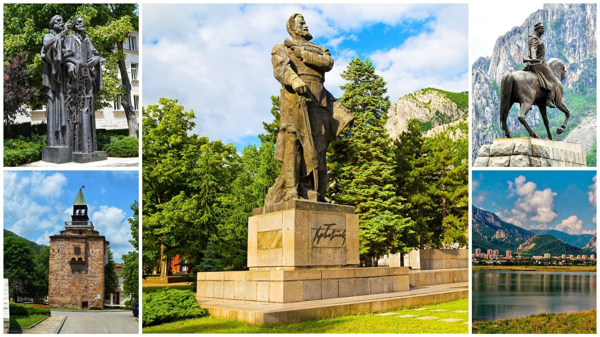
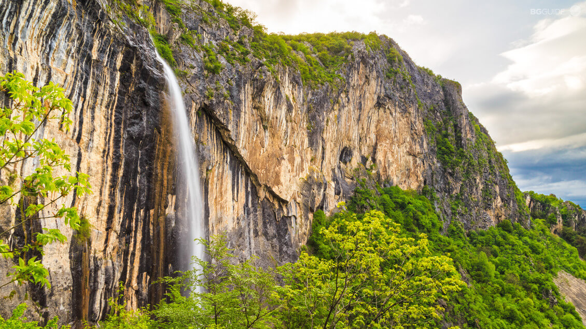

Моето любимо място в град Враца

Казвам се Мартин и съм от град Враца. Вече 14 години имам щастието да живея
в този невероятен град в северозападната част на България. Обичам го най-вече
заради богатата природа разположена около него и уникалната гледка към
Врачанския балкан. Има много забележителности, които очароват.
А сега ще ви разкажа и за любимото ми място в този град.
Когато имам свободно време винаги отивам на моето любимо място - Хижата.
Но защо точно Хижата? Причините са много, но нека първо да кажем какво
всъщност е любимото място. Всеки човек има такова място, където ходи,
за да си почине от натоварения живот.
Хижата е едно райско кътче, част от Стара планина, където мога да се насладя
на прекрасни гледки, изпълващи ме с трепет всеки път, когато ги зърна.
При това се намирам до една от многото забележителности на града,
а това е паметникът „Вестителят на свободата”.
Има и екопътеки за любителите на приключенията като мен, с някои от които
може да се стигне до друга забележителност – водопадът "Скакля".

Парка около хижата е прекрасен във всеки един сезон. А още по-хубаво е,
че той е свързан с велоалея, по която често карам колело.
Обичам да ходя там, защото природата е красива, има чист планински въздух,
тишина и спокойствие.